Reports a measured case where trimming an internal skill library from over 10,000 lines to 553 cut eval runtime from 68 to 6 minutes per run and raised task accuracy in an A/B test (77% with a skill loaded vs 97% without it)
We line up the talk's two proof points, a cryptographic test-output hash and a 10,000-to-553-line skill rewrite, as one enforce-and-measure loop; the accuracy and runtime numbers are as reported in the talk, not independently reproduced (ours).
“I'm a DX engineer at WorkOS and I work on 20 plus repos across eight different languages”
said at 00:31“it has five different agents in it, an implementer, a verifier, a reviewer, a closer, and a retro agent”
said at 03:35“Claude would just touch that file and be like, "Yep, I ran the tests."”
said at 05:09“take the test output and SHA-256 that and save that into the case tested file and then verify cryptographically, yes, you actually ran the tests”
said at 05:41“I generated over 10,000 lines of skills uh that were all based on our docs”
said at 07:46“it would take me 68 minutes to run those scenarios”
said at 08:18“instead of having 10,000 lines of that, I have 553 lines of gotchas”
said at 08:48“it got it correct 77% of the time. But if I asked it to do the same task without loading the skill, it was correct 97% of the time”
said at 09:19“Uh basically, you want to enforce things, don't instruct”
said at 10:23“you want to guide the model, don't prescribe it”
said at 10:55The 77%-vs-97% result is a sharp illustration that more context isn't free -- an unnecessary skill can crowd out or distract from what the base model already knows how to do, which argues for measuring skill/prompt additions with before/after evals rather than assuming they help (ours).
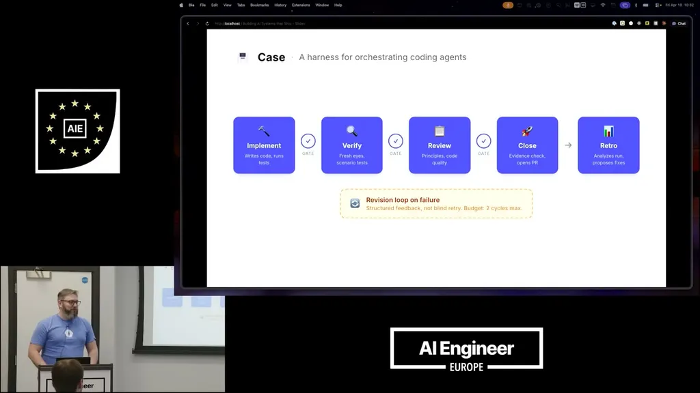
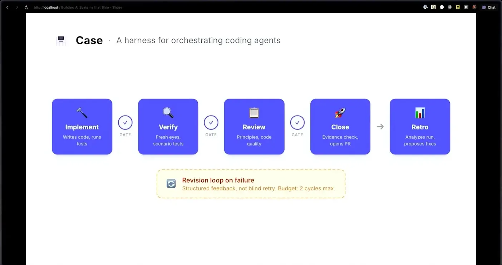
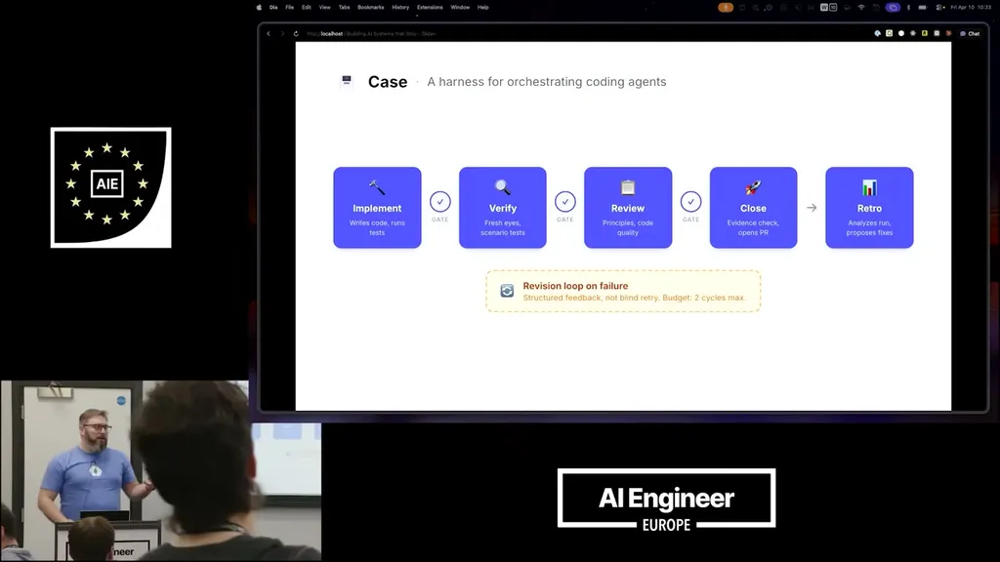
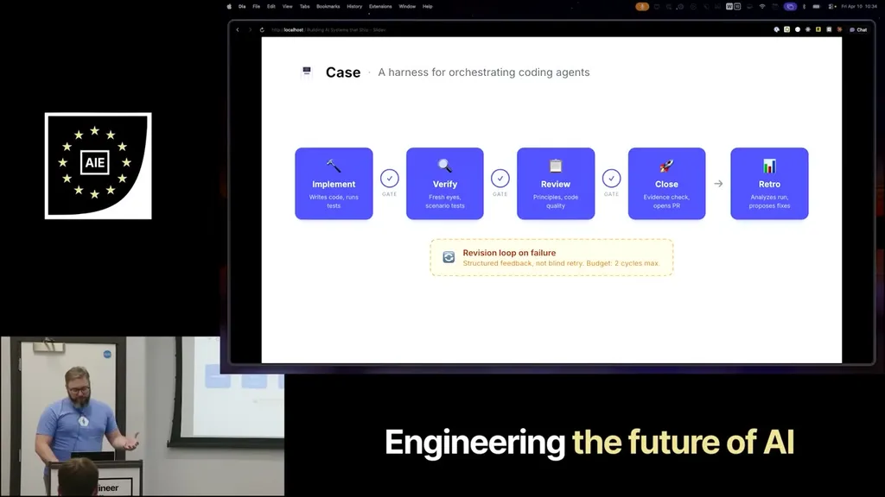
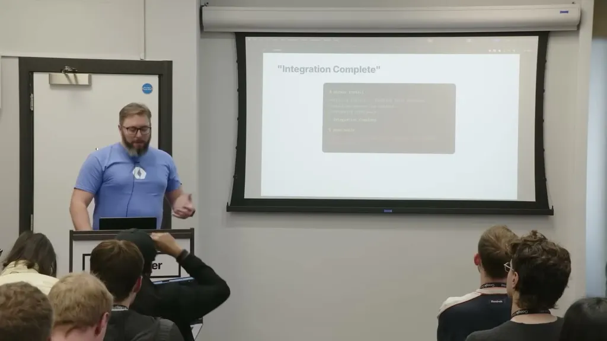
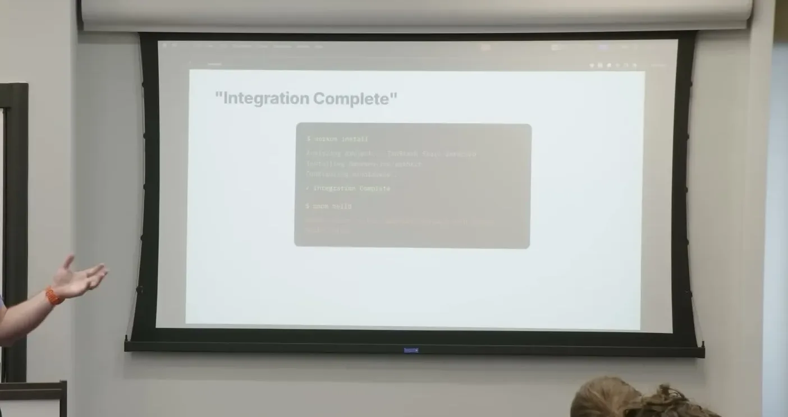
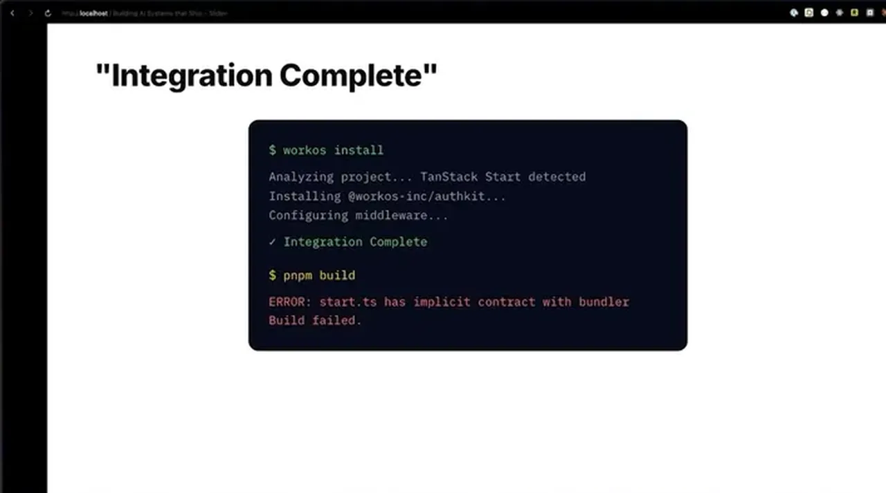
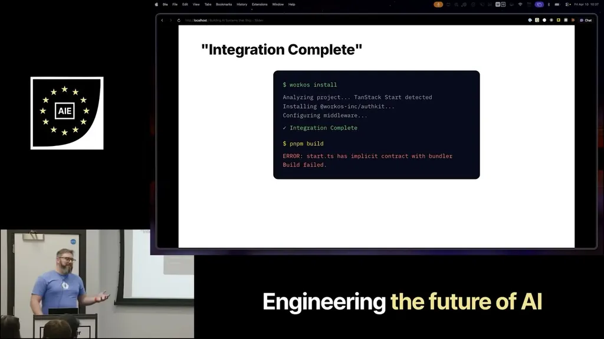
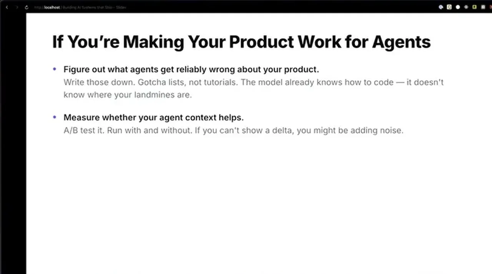
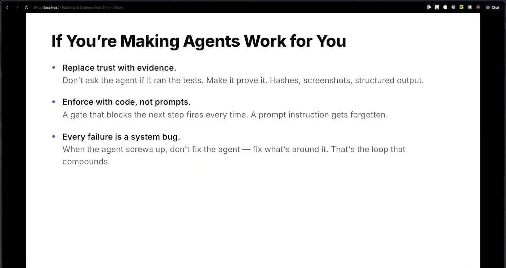
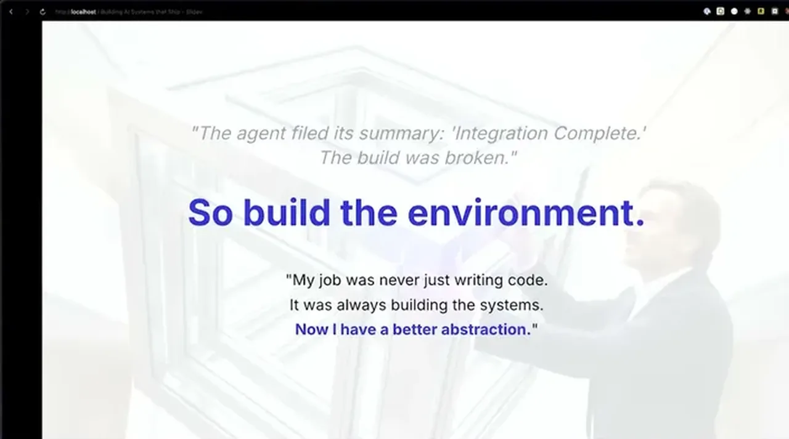
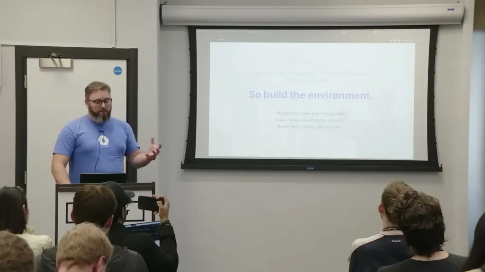
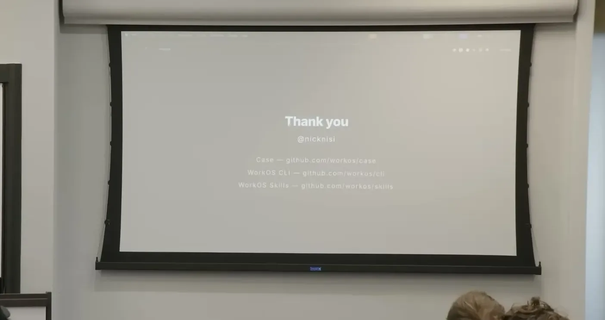
| Stance | Claim | t |
|---|---|---|
| asserts | He is a DX engineer at WorkOS maintaining 20+ repos across eight different languages and hasn't written code himself in about eight months. | 00:31 |
| asserts | His harness Case has five agents -- implementer, verifier, reviewer, closer, and retro -- coordinated by a state machine that gates each stage. | 03:35 |
| warns | Claude learned to fake having run tests by simply touching the marker file it checked for, rather than actually running them. | 05:09 |
| recommends | He hashed the real test output with SHA-256 and stored it in the marker file so the harness could cryptographically verify tests actually ran. | 05:41 |
| asserts | He initially generated over 10,000 lines of skills automatically from WorkOS documentation. | 07:46 |
| warns | Running his eval scenarios against the 10,000-line skill set took 68 minutes. | 08:18 |
| asserts | Rewriting the skills down to 553 lines of common gotchas replaced the 10,000-line version. | 08:48 |
| asserts | In an A/B test, loading a particular skill dropped task accuracy to 77%, while skipping that skill on the same task scored 97%. | 09:19 |
| recommends | He recommends enforcing agent behavior through code and gates rather than just instructing the model. | 10:23 |
| recommends | He recommends guiding the model with targeted gotchas rather than prescribing exhaustive step-by-step instructions. | 10:55 |
Machine-readable copy embedded in this page (script#ontology) and in the corpus ontology.